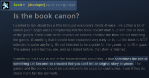
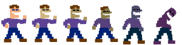
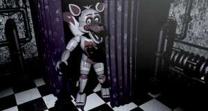
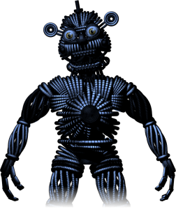
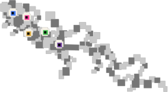

If you see any issues, please do make us aware via our Contact Form.
Thank you for browsing FNaFLore.com, we hope you enjoy the improvements that are coming to the site!

On Custom Night, and the lament of a Lorekeeper
The following massive block of text is my live reaction to, and subsistent handling of, the Sister Location Custom Night release.
I felt I wanted to do this with as little editing of the text as possible, so to keep it genuine. Note that my attitude shifted over time, and I kept quite open as to how I felt. As mentioned in the second sentence, this is a “stream of consciousness” reaction.
The end is more thought out and reasoned than the start naturally, as I come to terms with and consider the story.
I want to add, because this came up in the Discord, I hold very little emotional investment in FNaF, less so since the update. I’m not hysterical etc, these were just initial reaction, of which many people had much worse reactions than I. The title itself is mostly just a way to say the word “Lorekeeper”, which is a cool title I’ve always wanted to take for this site. It would have been Loremaster, but that’s a bit too full-on.
Right now, having finished this post and about to go to sleep, my mindset is one of, neutrality? Blankness? Basically, I feel it’s now a service to finish the lore site, not a passion, if that makes sense. I’ll still complete it and all, but, I just can’t bring myself to be excited over FNaF’s lore right now, in the immediate days after Custom Night.
So, please understand that this is totally off the cuff and honest, as well as that my mindset to FNaF is one of fatigue, rather than anger, sadness or disgust. Keep that in mind while reading this post.
What is even happening now?
I’m sat here, knowing I should probably type something. I’m just, going to type things as they come to mind. For those that know the term, a “stream of consciousness” post.
So, that just happened, huh. A whole lot of that just happened.
I am reminded of Popgoes, except proof that this is a thing that was impossible to solve until now, and that Popgoes has questionable motive, not questionable plot.
Firstly, I’m calling out the FNaF4 post. The one that said we should have solved the lore by then. It’s the first point of contention I feel, mulling this over. He said he was surprised people couldn’t solve it after FNaF4. Who the hell would have guessed that Ennard killed a guy, hollowed out their skin and wore it around like he was a Buffalo Bill that succeeded. I’m going to start by calling that out, and placing it on the table where we can all see it for now.
I want to clarify, my main thoughts are to the lore. Gameplay-wise, it’s not as dynamic as other FNaF games, but it is fairly good. I’d put it on par with FNaF4 in terms of gameplay quality.
I just, don’t know what has happened with this update. I will not argue that the minigames aren’t canon. Only a total hack would say that’s the case. No, it’s definitely canon, and theorists who deny this are still in stage 1 of grief, which actually, is a great analogy to what the community seems to be feeling. There are a lot of allusions to the stages of grief in these chats and on Reddit. It’s denial, anger, bargaining, depression and acceptance. I think I’ve started at 1, and moved to 4 in this post, to self-recognise my mindset.
This lore, I mean, I do respect it to a degree. To have Ennard take over someone and they rot, turning purple, I can fully respect that as a plot point. It is an ingenious piece of the plot. But, that means he’s been in the rotting phase for literal years, it makes no sense. The lore is too established to put sich an integral detail into the game here.
Where does this leave the murders? Is Ennard the one who killed the second set of kids? Purple Guy still killed kids, right? And experimented on them?
What is also sad to think, is just how sidelined Golden Freddy, Fredbear and The Puppet have become. None of them are fully explained in the lore.
(It was at this point that Dawko reached the final cutscene)
ENNARD JUST FLEW OUT OF HIS MOUTH AND HE IS STILL ALIVE.
Ok, no, back to stage 2. What the fuck is going on.
This feels like, a patch to the story. This is what this is, isn’t it? This is Scott seeing Springtrap, seeing he makes no sense now, and trying to retcon it during the telling of the story.
Scott is trying to have his cake an eat it. He’s having purple guy be possessed, but then not possessed and somehow alive but not.
This just feels like, the end of FNaF, except worse. Before, FNaF4 was the end. It was frustrating as an end, but it was fine. SL ended in a sort of “the story is getting silly but it solved FNaF’s 1-4 so who cares about the silly ending”. Now it feels like the silliness has spread to all the games, ruining them.
I’m in multiple discord chats right now, and people are just denouncing the game. I’m seeing developers, redditors, moderators and well respected people of the community flipping out. Some people are jokingly trying to prop Popgoes up at the one true lore that makes sense.
I feel, the whole death of the author thing with Popgoes, that’s now out the window. Popgoes, you can do whatever you want. Afton’s an alchemist and Blackrabbit escapes and flies off to have bountiful adventures as dust (because the 3D printed stuff disintegrates if not treated properly). Plus Simon kills Strings because he’s worried he’ll be discovered, fucking, whatever. Do whatever you want, I’m sorry I ever questioned your lore, in light of FNaF.
So, the Dawko stream is over now and just, what do we do now. I need to take these minigames, make sense of them in the way Scott wants us to make sense of them, and then spin a tale of how Purple Guy is actually a barely-living corpse during and after Fredbear’s Diner.
I need to take that, and I need to rationalise that to the rest of the lore.
The Next Day |
I need to still explain who Mike is. Is Purple Guy really Afton? Really? Could he be Mike now? I mean, the owner still wouldn’t be a lacky in his own company, right?
That’s perhaps what’s the most annoying thing. Scott has clearly changed the story since FNaF4, that is undeniable. He’s changed it to try to explain the plot holes, it would appear. But in doing so, more questions arise.
What, will SL 2 now bend the lore to explain if it’s Mike or Afton? Will that also expose a whole other plot hole?

A quote comes to mind. “Sometimes the lore of something can become so crowded that you can’t tell an original story anymore”. I think, the problem is the reverse. It’s not that you can’t tell an original story due to the lore, it’s that, the lore itself is so convoluted, that it is too unwieldy, to keep building the original story.Scott is building a story, but he’s built it over time, while not melding it into the past games. He’s now at the point of wrapping lore over lore, and between the lores, there are big contradictions. The story is being made as we go.
Scott seems to be at a point in the franchise where he is actively trying to patch the holes. A patch-job. But the implementation is so outlandish due to other parts of the lore, that frankly, I welcome the plot holes.
On the Popgoes note, I’m not going to go down that route here. Despite the minor tip of popularity for the Popgoes lore thing, that was a mistake of confused information from the developer and the project manager. This, this is no conflict. The story is clear. It was never a matter of if the story was good, it was always a matter of, which is the canon story.
I mean, at this point, and I’ve said it several times, but I’ll repeat it again, I’m just sat here, contemplating how I’m going to break the lore down for the community. I want to repeat these words to truly capture how I feel. It’s far more than that, but words don’t come to mind.
To wholly and accurately put across what I’m thinking, I just want to repeat that line. I’m trying to simplify a feeling into a sentence that seems obvious to me in it’s weight and tone, but feels like it will be abstract to anyone reading. I’ll try to describe it.

despair, is one word. a tad over the top, but fairly close. There is a bit of hopelessness and a large feeling of being lost. Like, waking up in the middle of an unmarked rural intersection. There is nothing around you. You don’t know where to go. What to do. You’re stuck at a crossroad, with no concept of direction. No concept of what to feel or where to go.A close friend of mine put across a sentiment to me while writing this up. They said “if games are art, they are open to critique, and when your biggest fans get blinded and let you do whatever, the art suffers”. To interrupt this stream, I want to point out, this is how I feel.
I hold no resentment to Scott the man. I hold no anger to him. If anything, I highly respect Scott in almost every aspect. There are things I disagree with him over, and the religious history is somewhat uncomfortable to a guy in my position, but that is hardly a reason to hate, dislike or strike off someone else.
This is all over FNaF the game. That is my critique. It’s the same position that some of his past critics, such as Jim Sterling, takes. Respect the person, critique the game. I respect him as a person, but it is out of love and respect for the game that I hold it to the highest standard. Lore-wise, a standard I felt slipped in FNaF4, got patched up in FNaF:SL (with the loose threads of Ennard’s origins and escape), and is now crashing in Custom Night after Scott tried to be clever with the lore.
So, what so I do with the site. Where does it go?
Well, first off, I’m not going to work on SL:CN until the new year. I need time for this all to settle. I need time for the lore to be solved proper, and I don’t feel up to doing so right now.
Popgoes is my #1 priority for December. I will not waver on that. That was planned, and until I know what the lore is, that is what will be done.
Just, this is so hard to see. So many dedicated theorist, developers and major community members are raging, laughing or disillusioned by this. Multiple people who were diehard fans, considering leaving the community. I know of at least 3, who won’t be named.
I said before, in my critique of Sister Location, please move on. FNaF is done, please just, wrap it up and move on. Instead, Custom Night doesn’t wrap it up. It keeps it in suspense, as it always has. Scott could have made SL end proper, but he didn’t.
Even me, being so dedicated to this game to have opened a website (To my own cost entirely, by the way. That Paypal donate button? not used once), feel that this has ended FNaF. Not just in the sense of the story, but in the taste it’s left in people’s mouths.

So, how would I fix it? I talk a game, but what would I do?Retcon. Retcon every game’s issues. When Homestuck got too big, they went back on their history, and retconned the story. It was also made a feature, later on in the story.
Scott has been mangling the story to fit the rest of the story since at least the end of FNaF4. Some would argue, since the end of FNaF3. But right now, these plot holes? they’re not worth keeping as plot holes. Go back to the games concerned, and fill them in. That’s my ultimate fix I’d initiate. I’d change Mike to Will on the hand-unit, I’d redo the audio to make William the CEO he always was, somehow sort out Springtrap and add additional minigames to the past games to explain how Purple Guy somehow managed to stay in one piece from 1983 to 1993, without rotting away completely. Then, I’d add a bit more to FNaFWorld that shows the final part of Ennard’s story. That would be my action plan.
Sometimes, a plot becomes so convoluted, you can’t tell an original story. This is true. But sometimes, the plot becomes so convoluted, you can’t tell a coherent story. That is the major issue right now.
Plans will keep marching on. I’ll keep FNaFLore up, the events will still go on, the plans for a fangame are pressing forward, games on the site will be completed and I will finish the SL sections. But, I need time.

As a final word, I want to appeal to Scott directly.
Scott, FNaF can’t keep going like this. You were lucky that it took off, and that stemmed from your excellent use of environmental details to tell a story. You brought back the importance of the finer details – something I’ve championed for years from the sidelines, and was happy to see come back in style. But, this isn’t healthy or natural.
There is a reason why Fawlty Towers ended on Season 2. There is a reason that The Simpsons is now a shadow of it’s former self. There’s a reason why HL3 is never coming out. Look to multi-series games, tv and movies.
The first is always the one that strikes it big, and loved due to sentiment. The second improves across it for the most part. The third, mixed reception. from there, it’s a downward slope. It’s the natural inclination of media. Try to name a media series that’s just as good as it ever was, with 3/4 instalments. You’ll be hard-pressed to find one.
I know you’ll see this as an attack, just like The Dolls. You’ll say I’m causing drama, or give me the ceremonious drama crown or something like that. But look around this text. physically, scroll up and down to see the effort put into this website. The effort and love put into this site. the time it’s taken, even down to the tiniest of details. This site holds more easter eggs and details than a site deserves to hold.
Look to the FNaF2 maps. Look to Mangle’s minigame bit. It took me 3 days to calculate and animate all of those blinking stars, you know. 3 days, trying to sort out what framerate(from 1,2, 4 or 8 frames) each star should be, based on rounded figures of their on-screen-
Look just, it took me a day per image to do that small map, with overly stupidly complex darned formulas because I’m an OCD sucker like that. I’m relaying this story to emphasise that I spend stupid amounts of time on this site. Frankly, it’s been my sole occupation after I’ve finished my job. That is how much this franchise has meant to me.
The bulk point is, call me what you want and dismiss me however you want, but I care for this franchise, it’s community and it’s lore. My intent is not to screw you over or insult you. That’s the last thing I want to do. But seriously, for the good of the game, you need to sort this out. Again, I’d recommend a retcon to remove contradicting information, or to emphasise stuff we do not know. Make it a game. The big retcon update of FNaF.

But most importantly, you need to now move on. FNaF should now die. It’s untenable to keep it alive, Scott. The sole thing that could keep it alive is proper free-roam. That’s it.I look forward to your next game, and I say that with full sincerity. But, you need to let FNaF die. This needs to end. It should have ended at 3. That ending as stunning and poignant. The hat under the spotlight, most of the plot wrapped up, it was a beautiful send-off. It was like, taking a bow at the end of the play. The hat was so deeply symbolic of what a proper end to the game should have been.
Keep working on these games. I want to see more. I want to enjoy more of your work. But FNaF should be wrapped up proper and clarified, and then left alone.
When I release the fangame I have planned, if it actually works out, I invite you to tear it apart. That is what is healthy and I welcome it. But Scott, please, FNaF can’t keep going and the community is torn on this whole plot twist. Please fix the plot errors or red herrings, add content that will narrow the lore further, then let it rest. Move on to a new IP. I literally do not care what point you’d choose to champion in the lore, I’m glad we have any points defined in the lore at all. 83, 87, it’s never mattered. All that’s mattered is figuring it out. But there are so many plot holes, that they should just be edited directly. No amount of new games will be able to patch over the plot holes.
This isn’t an insult. None of this is. It’s a plea. Please, just let FNaF go out peacefully. Don’t sequel it to death, and don’t end it on such a contradicting lore foundation. As a fan, nothing now would make me happier than for SL to just be solved at this point. Further games will only harm FNaF, not help it.
Kizzycocoa – Fan and Theorist